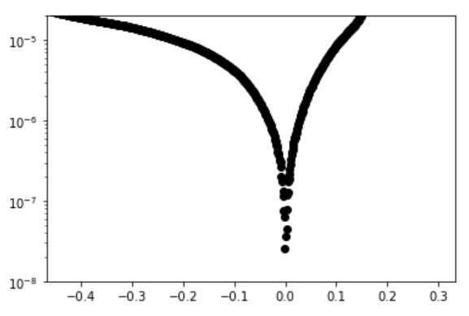

6. Creating a “Cheat Sheet”#
Learning Objectives
Be able to:
create your own cheatsheet of commands and functions
We have covered a lot of ground over that past few weeks. One of the methods I use to help me learn python is to keep a “cheat sheet” of useful commands that I know I will need but may forget later. Think about what it will be like not using python for an entire summer and then starting up again in the Fall. You may want to keep yourself notes to help you start up again. Below I’ve collected various pieces of code that we have used so far to get you started…
Note
If you use Jupyter Lab, there is table of contents that is created automatically for an open notebook. This is quite handy. It uses the header styles #, ##, etc for the outline.
6.1. My Cheat Sheet#
6.1.1. import statements#
import numpy as np
import pandas as pd
import matplotlib.pyplot as plt
import matplotlib
from pathlib import Path
6.1.2. taking parts of lists, arrays, and dataframes#
There are different methods used to slice python lists vs numpy arrays vs pandas dataframes
# defining some lists, arrays and a dataframe
python_list=['red', 'blue','green','taupe']
numpy_array=np.array(['red', 'blue','green','taupe'])
list_2d=[['red', 'blue','green','taupe'],['dog','cat','mouse','aardvark']]
numpy_array_2d=np.array([['red', 'blue','green','taupe'],['dog','cat','mouse','aardvark']])
pandas_df=pd.DataFrame([['red', 'blue','green','taupe'],['dog','cat','mouse','aardvark']], columns=('col1','col2','col3','col4'), index=('row1','row2'))
print('These are python lists: ')
display(python_list)
display(list_2d)
print('\nThese are numpy arrays: ')
display(numpy_array)
display(numpy_array_2d)
print(f'\nThis is a pandas dataframe: ')
display(pandas_df)
These are python lists:
['red', 'blue', 'green', 'taupe']
[['red', 'blue', 'green', 'taupe'], ['dog', 'cat', 'mouse', 'aardvark']]
These are numpy arrays:
array(['red', 'blue', 'green', 'taupe'], dtype='<U5')
array([['red', 'blue', 'green', 'taupe'],
['dog', 'cat', 'mouse', 'aardvark']], dtype='<U8')
This is a pandas dataframe:
| col1 | col2 | col3 | col4 | |
|---|---|---|---|---|
| row1 | red | blue | green | taupe |
| row2 | dog | cat | mouse | aardvark |
6.1.2.1. python lists#
We can use square brackets to take parts of a list but there is no simple way of taking more sophisticated parts such as the 2nd value in every row without writing a loop or list comprehension.
# slice list
print(list[0]) # remember indices start at zero so this gives 'red'
print(list[1:4]) # gives indice 1,2,3 or item 2,3,4 since we count from zero
print(list_2d[0]) # 1st row
# for nested lists we use list[dim1][dim2] and so on
print(list_2d[0][2]) # 1st row and 3 column
# 2nd value in every row
[list_2d[i][1] for i in [0,1]] #if this was an array we could write list_2d[:,2]
red
['blue', 'green', 'taupe']
['red', 'blue', 'green', 'taupe']
green
['blue', 'cat']
6.1.2.2. numpy arrays#
numpy_array_2d
array([['red', 'blue', 'green', 'taupe'],
['dog', 'cat', 'mouse', 'aardvark']], dtype='<U8')
# slice numpy array
print(numpy_array)
print(numpy_array[0]) # still starts counting from zero like list
print(numpy_array_2d[0,2]) # now we can combine row,column in one set of braces
# or for a range use ":"
print(numpy_array_2d[0:2,1])
print(numpy_array_2d[0,1:3])
# can even use True and False for each [row, column]
print(numpy_array_2d[[True, False],[False, False, True, True]])
['red' 'blue' 'green' 'taupe']
red
green
['blue' 'cat']
['blue' 'green']
['green' 'taupe']
6.1.2.3. pandas dataframe#
# pandas dataframe to select a column use the columns name
display(pandas_df[['col3']])
# or for multiple columns
display(pandas_df[['col2', 'col4']])
| col3 | |
|---|---|
| row1 | green |
| row2 | mouse |
| col2 | col4 | |
|---|---|---|
| row1 | blue | taupe |
| row2 | cat | aardvark |
# pandas dataframe use .loc to slice by [row index,column names]
display(pandas_df)
display(pandas_df.loc['row2','col2'])
display(pandas_df.loc['row2',['col1', 'col3']]) # give list of names for multiple columns or rows
display(pandas_df.loc[['row1','row2'],['col1', 'col4']])
display(pandas_df.loc[['row1','row2'],'col2':'col4']) #can also use ":" for a range or rows or columns
display(pandas_df.loc[['row1','row2'],:]) # ":" by itself means all. in this case all columns
| col1 | col2 | col3 | col4 | |
|---|---|---|---|---|
| row1 | red | blue | green | taupe |
| row2 | dog | cat | mouse | aardvark |
'cat'
col1 dog
col3 mouse
Name: row2, dtype: object
| col1 | col4 | |
|---|---|---|
| row1 | red | taupe |
| row2 | dog | aardvark |
| col2 | col3 | col4 | |
|---|---|---|---|
| row1 | blue | green | taupe |
| row2 | cat | mouse | aardvark |
| col1 | col2 | col3 | col4 | |
|---|---|---|---|---|
| row1 | red | blue | green | taupe |
| row2 | dog | cat | mouse | aardvark |
# to test pandas rows for a value of a specific column
display(pandas_df['col2']=='cat')
# then pass this to dataframe to get the row that passed the test
pandas_df[pandas_df['col2']=='cat']
row1 False
row2 True
Name: col2, dtype: bool
| col1 | col2 | col3 | col4 | |
|---|---|---|---|---|
| row2 | dog | cat | mouse | aardvark |
# for multiple tests separate by () and use & for 'and' or | for 'or'
test1=pandas_df['col2']=='cat'
test2=pandas_df['col4']=='taupe'
test=test1 | test2 # find all rows that contain the work 'cat' or 'taupe'
# then pass this to dataframe to get the row that passed the test
pandas_df[test]
| col1 | col2 | col3 | col4 | |
|---|---|---|---|---|
| row1 | red | blue | green | taupe |
| row2 | dog | cat | mouse | aardvark |
6.1.3. writing your own functions#
Basic format:
def function_name(variable_1, variable_2, etc):
statement_1
statement_2
return variable #or print() statement
# some examples
def isdiv3(x):
if np.mod(x,3)==0: #the mod function gives the remainder after dividing x/3
print(f"Yes, {x} is divisible by 3")
else:
print(f'No, {x} is not divisible by 3')
def ln(x):
return np.log(x)
def log(x):
return np.log10(x)
# example use
isdiv3(12)
Yes, 12 is divisible by 3
6.1.4. arrays, testing, conditionals#
import numpy as np
ran_num=np.random.random(20) #20 random pts from 0 to 1
ran_num
array([0.84974581, 0.8875687 , 0.01154035, 0.34606484, 0.72343324,
0.54798744, 0.89626084, 0.36678692, 0.82695073, 0.38528642,
0.48309394, 0.17689345, 0.66077508, 0.17767132, 0.6983905 ,
0.94707871, 0.09315554, 0.89162452, 0.13314569, 0.84237125])
# test the above to see which are less than or equal to 0.5
test = ran_num<=0.5
test
array([ True, False, False, True, True, True, False, True, True,
True, False, True, True, True, False, True, False, True,
True, True])
# here are the numbers that are less than 0.5
ran_num[test]
array([0.41667741, 0.45799714, 0.07472815, 0.05762729, 0.38728073,
0.44059531, 0.24126769, 0.41307754, 0.25278991, 0.34548798,
0.3145106 , 0.07006855, 0.3944208 , 0.37420957])
# how many are less than 0.5 use len()
len(ran_num[test])
14
6.1.4.1. multiple testing conditions#
Below: & means “and” and | means “or”. The | character is above the \ character.
# for multiple condition testing
test1 = ran_num<=0.5
test2 = ran_num>=0.3
print('using and: ')
print(ran_num[test1 & test2])
print('using or:')
print(ran_num[test1 | test2])
using and:
[0.34606484 0.36678692 0.38528642 0.48309394]
using or:
[0.84974581 0.8875687 0.01154035 0.34606484 0.72343324 0.54798744
0.89626084 0.36678692 0.82695073 0.38528642 0.48309394 0.17689345
0.66077508 0.17767132 0.6983905 0.94707871 0.09315554 0.89162452
0.13314569 0.84237125]
6.1.5. for loop, if elif else, iteration, list comprehension#
# using for loop
xlist=[]
for x in [3,4,5,6,7]:
xlist.append(x**2)
xlist
[9, 16, 25, 36, 49]
# using list comprehension
[x**2 for x in [3,4,5,6,7]] #list comprehension style
[9, 16, 25, 36, 49]
# using numpy array
def square(x):
return(x**2)
xlist=np.array([3,4,5,6,7])
square(xlist)
array([ 9, 16, 25, 36, 49], dtype=int32)
def myfunc(var1, var2, var3):
#first if, else statement avoids dividing by zero
if var1 ==0:
return(0)
else: ratio=var3/var1
#second if, elif, else statement
if ratio < 0:
return(50)
elif ratio == 0:
return(1)
elif ratio == 0.5:
return(60)
else: return(ratio)
np.linspace(-1,4,21)
[myfunc(x,3,1.5) for x in [0,1,2,3]]
[0, 1.5, 0.75, 60]
6.1.6. Examples of markdown language.#
Just double click in a cell below to see the coding.
Shift-Enter in a markdown cell to convert the coding.
Use #, ##, ###, etc for headings
bold text, italic text, highlighted text
Greek letters: \(\mu\), \(\omega\), \(\chi\), \(\nu\), \(\psi\), \(\alpha\)
indented text
more text
use 2 spaces at the end of a sentence and then Enter to separate lines
numbering
bullets
6.1.7. Equations:#
(use single $ for inline and double $$ for centered)
subscript: \(x_2 = \mu \times \sigma\)
superscript: \(x^3\)
fraction: \(\frac{3 x}{2}\)
\(\color{red}{\sum_a^b}\), \(\overline{ab}\), \(\overrightarrow{ab}\)
6.1.8. formatting output, f-string, display#
import numpy as np
print(np.pi)
print('or in nicer formatting:')
print(f'Pi to the fourth decimal place is: {np.pi:0.4f}')
3.141592653589793
or in nicer formatting:
Pi to the fourth decimal place is: 3.1416
6.1.9. Using display instead of print for nicer output of dataframes#
from IPython.display import display
import pandas as pd
pandas_df=pd.DataFrame([[0,1,2,3,4],[5,6,7,8,9]])
print(pandas_df)
display(pandas_df)
0 1 2 3 4
0 0 1 2 3 4
1 5 6 7 8 9
| 0 | 1 | 2 | 3 | 4 | |
|---|---|---|---|---|---|
| 0 | 0 | 1 | 2 | 3 | 4 |
| 1 | 5 | 6 | 7 | 8 | 9 |
6.1.10. numpy#
import numpy as np
#180 degrees = pi radians
np.cos(np.pi/4) #trig functions all expect radians not degrees
0.7071067811865476
np.sqrt(140)
11.832159566199232
# exp is the constant e
np.exp(1)
2.718281828459045
xdata=np.geomspace(100,1e6,num=30, dtype=int) #tell it to round to the closest integer dtype=int
xdata
array([ 100, 137, 188, 259, 356, 489, 672,
923, 1268, 1743, 2395, 3290, 4520, 6210,
8531, 11721, 16102, 22122, 30391, 41753, 57361,
78804, 108263, 148735, 204335, 280721, 385662, 529831,
727895, 1000000])
xdata=np.linspace(100,1e6,num=30, dtype=int) #tell it to round to the closest integer dtype=int
xdata
array([ 100, 34579, 69058, 103537, 138017, 172496, 206975,
241455, 275934, 310413, 344893, 379372, 413851, 448331,
482810, 517289, 551768, 586248, 620727, 655206, 689686,
724165, 758644, 793124, 827603, 862082, 896562, 931041,
965520, 1000000])
6.1.11. pandas, dataframes#
6.1.11.1. reading, writing data: Excel, CSV#
import pandas as pd
from pathlib import Path
# path is for directory of file
path=Path(r"C:\Users\sgc\Google Drive\Teaching\2114 & 3114 Math I & II\git_2114_3114\data for practice")
filename='Student credit hours dept numbers.xlsx'
#fullpath puts together the directory path and filename
fullpath=path / filename
# read with pandas read_excel() or read_csv()
raw_excel=pd.read_excel(fullpath)
raw_excel.head(10)
| Unnamed: 0 | Unnamed: 1 | Unnamed: 2 | Unnamed: 3 | Unnamed: 4 | Unnamed: 5 | Unnamed: 6 | Unnamed: 7 | Unnamed: 8 | Unnamed: 9 | Unnamed: 10 | Unnamed: 11 | Unnamed: 12 | Unnamed: 13 | Unnamed: 14 | |
|---|---|---|---|---|---|---|---|---|---|---|---|---|---|---|---|
| 0 | NaN | NaN | NaN | NaN | NaN | NaN | NaN | NaN | NaN | NaN | NaN | NaN | NaN | NaN | NaN |
| 1 | NaN | NaN | NaN | NaN | NaN | NaN | NaN | NaN | NaN | NaN | NaN | NaN | NaN | NaN | NaN |
| 2 | NaN | NaN | NaN | NaN | NaN | NaN | NaN | NaN | NaN | NaN | NaN | NaN | NaN | NaN | NaN |
| 3 | NaN | NaN | NaN | NaN | NaN | NaN | NaN | NaN | NaN | NaN | NaN | NaN | NaN | NaN | NaN |
| 4 | NaN | NaN | NaN | NaN | NaN | NaN | NaN | NaN | NaN | NaN | NaN | NaN | NaN | NaN | NaN |
| 5 | NaN | NaN | NaN | NaN | NaN | NaN | Fall 2018 SCH | NaN | NaN | NaN | NaN | NaN | NaN | NaN | NaN |
| 6 | NaN | NaN | NaN | NaN | # faculty | Dept | on campus | off campus | Total | SCH / Faculty | NaN | NaN | NaN | NaN | NaN |
| 7 | NaN | NaN | NaN | NaN | NaN | NaN | NaN | NaN | NaN | NaN | NaN | NaN | NaN | NaN | NaN |
| 8 | NaN | NaN | NaN | NaN | 29 | AOE | 7313 | 318 | 7631 | 263.137931 | NaN | NaN | NaN | NaN | NaN |
| 9 | NaN | NaN | NaN | NaN | NaN | BMES | 1432 | NaN | 1432 | NaN | NaN | NaN | NaN | NaN | NaN |
# .loc[rows, columns] lets us use the names of the columns and rows
#in our case rows = "6:9" which means rows 6 through 9
# columns is a list of columns to take ["Unnamed: 4",'Unnamed: 5']
data_to_save=raw_excel.loc[6:9,["Unnamed: 4",'Unnamed: 5']]
data_to_save
path=Path(r"C:\Users\sgc\Google Drive\Teaching\2114 & 3114 Math I & II\git_2114_3114\data for practice")
filename='lesson 3 outfile.xlsx'
outpath=path / filename
data_to_save.to_excel(outpath, index = True, header=True)
#try changing index=True and check your output file
# If your data is not in the format of a pandas dataframe then it
# will have to be put in that format
# here's an example that works with np.arrays or simple lists of data
stress=np.array([1,2,-3,-4])
strain=np.array([5,6,7,8])
# stress=[1,2,3,4] ## this works too
# strain=[5,6,7,8] ## this works too
d = {'stress MPa': stress, 'strain': strain} # format here is 'column name':data array
# you can make as many columns as you have lists of data
df = pd.DataFrame(data=d) # our data is now two columns in a dataframe called "df"
df
| stress MPa | strain | |
|---|---|---|
| 0 | 1 | 5 |
| 1 | 2 | 6 |
| 2 | -3 | 7 |
| 3 | -4 | 8 |
# another way to create DataFrame
data_pd = pd.DataFrame(zip(x,y), columns=['x data','y data']) #zip creates an object of (x,y) pairs from our x,y series
6.1.11.2. Apply a function e.g. np.abs() to a pandas dataframe column#
import numpy as np
from IPython.display import display
import pandas as pd
stress=[1,2,-3,-4]
strain=[5,6,7,8]
d = {'stress': stress, 'strain': strain} # format here is 'column name':data array
df = pd.DataFrame(data=d) # our data is now two columns in a dataframe called "df"
display(df)
# now lets multiply the strain by 3
df['strain']=3*df['strain']
display(df)
# likewise if we want the sqrt of a column
df['strain']=np.sqrt(df['strain'])
display(df)
# or the abolute value
df['stress']=np.abs(df['stress'])
display(df)
| stress | strain | |
|---|---|---|
| 0 | 1 | 5 |
| 1 | 2 | 6 |
| 2 | -3 | 7 |
| 3 | -4 | 8 |
| stress | strain | |
|---|---|---|
| 0 | 1 | 15 |
| 1 | 2 | 18 |
| 2 | -3 | 21 |
| 3 | -4 | 24 |
| stress | strain | |
|---|---|---|
| 0 | 1 | 3.872983 |
| 1 | 2 | 4.242641 |
| 2 | -3 | 4.582576 |
| 3 | -4 | 4.898979 |
| stress | strain | |
|---|---|---|
| 0 | 1 | 3.872983 |
| 1 | 2 | 4.242641 |
| 2 | 3 | 4.582576 |
| 3 | 4 | 4.898979 |
6.1.12. cleaning data#
from IPython.display import display
# make sure all "data" columns are numeric not "object"
dd=pd.DataFrame([[1,2,3],[4,"-",6], [4.5, 7.8, 0.01]])
display(dd)
print()
print('**Notice that column 2 is non-numeric (object): **')
print()
print(dd.info())
print()
# The 2nd column (column index 1) in dd is listed as "object" we need to convert to numeric
# but the string "-" can't be converted so we use the option coerce
# this will replace strings with NaN and everything else to numeric
dd[1]=pd.to_numeric(dd[1], errors='coerce')
print('**Notice that column 2 is now numeric (float64): **')
print()
print(dd.info())
display(dd)
| 0 | 1 | 2 | |
|---|---|---|---|
| 0 | 1.0 | 2 | 3.00 |
| 1 | 4.0 | - | 6.00 |
| 2 | 4.5 | 7.8 | 0.01 |
**Notice that column 2 is non-numeric (object): **
<class 'pandas.core.frame.DataFrame'>
RangeIndex: 3 entries, 0 to 2
Data columns (total 3 columns):
# Column Non-Null Count Dtype
--- ------ -------------- -----
0 0 3 non-null float64
1 1 3 non-null object
2 2 3 non-null float64
dtypes: float64(2), object(1)
memory usage: 200.0+ bytes
None
**Notice that column 2 is now numeric (float64): **
<class 'pandas.core.frame.DataFrame'>
RangeIndex: 3 entries, 0 to 2
Data columns (total 3 columns):
# Column Non-Null Count Dtype
--- ------ -------------- -----
0 0 3 non-null float64
1 1 2 non-null float64
2 2 3 non-null float64
dtypes: float64(3)
memory usage: 200.0 bytes
None
| 0 | 1 | 2 | |
|---|---|---|---|
| 0 | 1.0 | 2.0 | 3.00 |
| 1 | 4.0 | NaN | 6.00 |
| 2 | 4.5 | 7.8 | 0.01 |
# let's drop rows and columns that have no data
df=raw_excel.dropna(how='all', axis=0) #removes rows
# try changing 'all' to 'any' in these commands. What is the result?
df=df.dropna(how='all', axis=1) #now remove columns
df
df=df.drop(5)
# now lets rename our columns
df.columns=['num faculty','dept','on campus','off campus', 'total', 'SCH per faculty']
df
df=df.drop(6) # we don't need the first row again now labeled "6"
df=df.reset_index(drop=True) #reset row numbering
df=df.fillna(0) #replace NaN with 0
df
# dropping first two columns here since I don't need them
df=raw.drop(['Unnamed: 0','Unnamed: 0.1'],axis=1)
df
6.1.13. Closer look at .dropna()#
import numpy as np
import pandas as pd
# lets make a dataframe to look at
stress=[1,2,-3,np.nan,-4]
strain=[5,np.nan,7,np.nan,8]
blank=[np.nan,np.nan,np.nan,np.nan,np.nan]
d = {'stress': stress,'some empty col':blank, 'strain': strain} # format here is 'column name':data array
df = pd.DataFrame(data=d) # our data is now two columns in a dataframe called "df"
display(df)
| stress | some empty col | strain | |
|---|---|---|---|
| 0 | 1.0 | NaN | 5.0 |
| 1 | 2.0 | NaN | NaN |
| 2 | -3.0 | NaN | 7.0 |
| 3 | NaN | NaN | NaN |
| 4 | -4.0 | NaN | 8.0 |
First, remember that:
axis=0 means to operate only on the rows
axis = 1 means to operate only on the columns
# when using dropna we have a choice of how="all" or how="any"
# 'any' means that any column or row that has AT LEAST ONE "NaN" will be dropped
display(df.dropna(how='any', axis=0)) # this gets rid of all our rows since every row has at least one NAN
| stress | some empty col | strain |
|---|
# 'all' means that ALL elements of a given column or row must by NaN before it is dropped
# in this case our middle column is all Nan so we can remove it this way
display(df.dropna(how='all', axis=1)) #removes rows
| stress | strain | |
|---|---|---|
| 0 | 1.0 | 5.0 |
| 1 | 2.0 | NaN |
| 2 | -3.0 | 7.0 |
| 3 | NaN | NaN |
| 4 | -4.0 | 8.0 |
#now that we got rid of the column that was all Nan we can operate on the rows
#for the rows we want to remove ANY row that contains an NaN since that is a bad datapoint
display(df)
df=df.dropna(how='all', axis=1) # this removes the col and replaces the dataframe
display(df)
# now let's remove the rows
display(df.dropna(how='any', axis=0))
| stress | some empty col | strain | |
|---|---|---|---|
| 0 | 1.0 | NaN | 5.0 |
| 1 | 2.0 | NaN | NaN |
| 2 | -3.0 | NaN | 7.0 |
| 3 | NaN | NaN | NaN |
| 4 | -4.0 | NaN | 8.0 |
| stress | strain | |
|---|---|---|
| 0 | 1.0 | 5.0 |
| 1 | 2.0 | NaN |
| 2 | -3.0 | 7.0 |
| 3 | NaN | NaN |
| 4 | -4.0 | 8.0 |
| stress | strain | |
|---|---|---|
| 0 | 1.0 | 5.0 |
| 2 | -3.0 | 7.0 |
| 4 | -4.0 | 8.0 |
6.1.14. data analysis#
# sort data frame by values in column "num faculty"
sch_data=df.sort_values(['num faculty','dept']).reset_index(drop=True)
#try removing ".reset_index()" and see what you get
#or change drop=True to drop=Fals and see what happens
sch_data
# we don't need lines 0 - 4 so let's take only 5-15
sch_data=sch_data[5:16]
sch_data
sch_data['dept']
sch_data['credit_faculty']=(sch_data['total']/sch_data['num faculty'])
sch_data
#test the data for cases where the number of faculty is < 30
test=sch_data['num faculty']<30
#now let's select those data
sch_slice=sch_data[test]
sch_slice
# rounding some of the numbers so they group better
df['LineSpeed']=df.loc[:,'LineSpeed'].round(1)
df['ExtrTemp']=df.loc[:,'ExtrTemp'].round(0)
df
# groupby collects all records for the different cities and then
# counts how many records there are
dfgroup=df.groupby(['City']).count()
dfgroup
# try the line below and see what it gives
# dfgroup=df.groupby(['City']).size()
# dfgroup
dfgroup.sum()
# now we are grouping by two columns
# we first collect the Cities
# then group within eqach city by the ExtrTemp
# here we take the mean value in these two categories for each column
dfmean=df.groupby(['City','ExtrTemp']).mean()
dfmean
# the mean value of WaterTemp in Alexandria at an ExtrTemp of 235 degrees is
dfmean.loc[('Alexandria',235.0), 'WaterTemp']
pd.pivot_table(df, values=['Measure', 'WaterTemp','LineSpeed'], index=['City', 'ExtrTemp'],
aggfunc={'Measure': np.mean,
'WaterTemp': [min, max, np.mean],
'LineSpeed':[np.sum,np.mean,np.size]})
6.1.15. Plotting#
plt.plot(sch_data['num faculty'], sch_data['credit_faculty'], 'ro')
plt.ylabel('student credit hours per faculty')
plt.xlabel('number of faculty in department')
plt.show()
#define a function for the fit. In this case just a line
def lin(x, m, b):
return m*x+b
plt.plot(sch_slice['num faculty'], lin(sch_slice['num faculty'],11.105,-61.6635), 'k--')
plt.plot(sch_data['num faculty'], sch_data['credit_faculty'], 'ro')
plt.axhline(y=275, linewidth=1, color='b', linestyle='-')
plt.axis([10,70,50,400]) #specify axis limits like this
plt.show()
d=np.linspace(0, 50, 20) #creates 20 evenly spaced pts from 0 to 50
x_sol=x_solution(2,9,5,d)
plt.plot(d,x_sol,'ro')
plt.xlabel('d')
plt.ylabel('x solution')
plt.annotate('$a x^2 + b x + c = d$', xy=(5, 2.5), color='b') # you can include text on your plot
plt.annotate('$a x^2$', xy=(40, 0.5), color='b') # you can include text on your plot
plt.show()
6.1.16. Curve Fitting#
#read in package for curve fitting
from scipy.optimize import curve_fit
#define a function for the fit. In this case just a line
def lin(x, m, b):
return m*x+b
best_vals, covar = curve_fit(lin, sch_slice['num faculty'], sch_slice['credit_faculty'])
print(f'Our fit is given by {best_vals[0]:.2f} x + {best_vals[1]:.2f}')
print(best_vals) #these are in order as defined in function i.e. m , b
plt.plot(sch_slice['num faculty'], lin(sch_slice['num faculty'],11.105,-61.6635), 'k--')
plt.plot(sch_data['num faculty'], sch_data['credit_faculty'], 'ro')
plt.show()
6.1.17. special functions#
from scipy import special
special.erf(0.5)
0.5204998778130465
6.2. Exercises#
6.2.1. Problem 1#
Start your own cheat sheet.
6.2.2. Problem 2#
Read in the data file: Tafel data for 2114.xlsx
Check the type of each column using .info() for e.g. your_dataframe.info()
Drop columns with no values
Convert the column “Current” to numeric (see “cleaning data” section above)
Drop any row containing NaN – use the option how=‘any’ rather than how=‘all’ (see ‘cleaning data” section above)
Replace the column “Current” with its absolute value (np.abs())
Plot the Potential on the x-axis and Current on the y-axis. Label your axes. Set your yscale to log. e.g. plt.yscale(‘log’)
Replot the previous using the axis scale: [-1.5,-0.7,1e-8,2e-5]
Replot the previous on a linear scale with the axis: [-1.08,-1,0,1e-6]
Take all data with a potential between -1.06 and -1.035 and fit to a line.
Replot #9 and include your fit.
Based on your fit, determine the potential where the current is zero.
Subtract the potential found in #12 from your potential data and replot #8. You will have to adjust your x axis scale since you just shifted your data.
You should get a plot that looks like:
{kind=link}